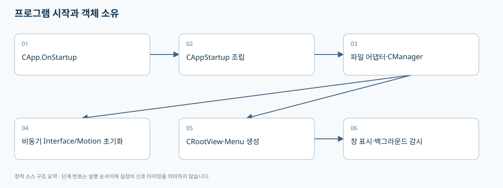

01. 프로그램은 어떻게 시작되고 누가 무엇을 소유하는가
> 기준: A3Drilling/master · 5aee8e58439c9b455cae7c9593c9be986c3e682e. 본 장은 해당 Commit의 소스를 정적으로 읽어 설명합니다. 장비 연결·가공·컴파일을 실행한 결과가 아닙니다.
처음 보는 개발자는 CApp → CAppStartup → CManager → CRootView 순서로 읽으면 됩니다. 화면과 파일 저장, 장비 통신을 한 클래스에서 모두 수행하는 구조가 아니라, 시작 지점에서 객체를 만들고 같은 Manager를 여러 메뉴에 전달합니다. 실제 객체 구성은 아래 근거로 확인할 수 있습니다.

flowchart TD
A[CApp.OnStartup] --> B[CAppStartup.CreateMainViewModel]
B --> C[파일 어댑터와 CManager 생성]
C --> D[설정·인터페이스·Product 구성 읽기]
B --> E[Task.Run: manager.Initialize]
B --> F[CRootView와 메뉴에 Manager 전달]
F --> G[DataContext 연결·창 표시]
B --> H[백그라운드 감시 시작]
E --> I[Interface 연결 → Motion 초기화]
1. 시작 시점의 실제 호출 순서
| 단계 | 실제 진입점 | 입력·결과 | 확인할 문제 |
|---|
| 예외 처리 준비 | CApp.OnStartup → RegisterExceptionHandlers | Dispatcher/AppDomain/UnobservedTask 예외를 로그에 연결 | 로그 등록과 예외 복구는 다릅니다. 등록했다고 실행이 안전하게 계속된다는 뜻은 아닙니다. |
| 루트 창 읽기 | LoadComponent(CRootView.xaml) | WPF Window 인스턴스 | XAML 로드 실패와 ViewModel 생성 실패를 구분합니다. |
| 구성 객체 생성 | CAppStartup.CreateMainViewModel | 파일 어댑터, CManager, CRootView | 파일 경로·스키마 오류는 시작 실패 또는 시작 상태 메시지로 드러날 수 있습니다. |
| 화면 연결 | window.DataContext = _rootView | 화면이 RootView 속성·명령을 참조 | Manager를 UI에서 다시 만들면 캐시·상태 소유권이 갈라집니다. |
| 표시 | window.Show() | 화면 표시 | 표시 완료를 장비 연결 완료로 해석하면 안 됩니다. |
근거: OnStartup의 창 생성·표시·실패 처리 [오프라인 파일 해설], 전역 예외 로그 등록 [오프라인 파일 해설], CreateMainViewModel 전체 조립부 [오프라인 파일 해설].
CreateMainViewModel은 manager.Initialize()를 Task.Run으로 시작하고 기다리지 않은 채 RootView를 반환합니다. 따라서 구성 로드 → 창 표시 → 장비 초기화 완료가 하나의 동기 함수처럼 끝나는 것으로 가정하면 안 됩니다. 이는 소스에서 확인되는 비동기 경계입니다. 실제 장비 준비 완료 판단은 연결 상태와 시작 단계 결과, 인터락을 따로 확인해야 합니다. 비동기 Initialize와 BackgroundMonitoring 시작 [오프라인 파일 해설].
2. CManager 생성자가 만드는 소유 관계
| 객체 | 생성 목적 | 주로 소비하는 곳 | 바꾸면 함께 읽을 곳 |
|---|
CSettingManager | Setting 파일을 읽고 메모리 캐시·검증을 제공 | 메뉴, 좌표 준비, 인터페이스·인터락 | CSettingFile, Setting UI, BuildRuntimeParameters |
CInterfaceManager | 등록된 장치별 통신·상태·장치 명령의 공통 입구 | Automation, Review, Station, Monitor | CComm, 장치별 Comm, JHMI Interface 정의 |
CAutomationManager | Automation1 명령·Script 경로·상태 취득을 묶음 | Station, Manual, Monitor | Automation1 Comm, Script 생성기 |
CMotionManager | 축 정의와 컨트롤러를 연결하고 축 명령을 처리 | Station 및 수동 이동 UI | Motor 정의·컨트롤러별 구현 |
CProductManager | 현재 Glass/Product의 상태·결과·스냅샷 관리 | Station, Review, Monitor | CProductFile의 compact 저장 형식 |
CReviewManager | 리뷰 결과/측정 영역의 서비스 객체 | Review·Correction 및 Stage 연동 | 리뷰 전용 상세 장과 파일 레퍼런스 |
CRecipeManager | 레시피 읽기·저장·이력·동시성 관리 | Recipe UI, Station, Review | CJhmiRecipeFile, JHMI_RCP 정의 |
CStationManager | Process Station을 UI/상위 요청에 노출 | RootView, 수동/자동 기능 | CStationProcess 및 partial 파일 |
이 표는 실제 CManager 생성 순서를 요약한 것입니다. 모든 Manager가 임의로 직접 연결되는 것이 아니라 앞서 만들어진 객체가 뒤 객체의 생성자에 전달됩니다. ProductManager와 RecipeManager는 다른 책임을 갖고 같은 데이터를 저장하는 대체재가 아닙니다. Manager 생성·주입과 실패 이벤트 연결 [오프라인 파일 해설].
3. 파일 객체를 인터페이스처럼 주입하는 이유
CAppStartup은 CJhmiRecipeFile, CSettingFile, CProductFile, CReviewResultFile, CReviewOffsetFile, CAutomation1ScriptFile 등 구체 파일 객체를 만듭니다. Common 영역의 Manager가 파일 저장 방식을 직접 결정하기보다 주입받은 파일 객체에 작업을 요청하도록 구성되어 있습니다. 예를 들어 레시피 저장 흐름을 이해하려면 UI의 Save 버튼 → CRecipeManager → CJhmiRecipeFile → CCsvParser를 따라야 합니다. UI 파일만 읽고 실제 저장 형식을 확정하면 안 됩니다. 파일 어댑터 생성 [오프라인 파일 해설], Recipe 파일 추상 계약 [오프라인 파일 해설].
이 분리는 수정 범위 판단에도 유용합니다. 화면 이름만 바꾸는 변경은 UI에 머물 수 있지만, 새 Parameter를 실제 저장하고 Script까지 사용하려면 정의 CSV와 File·Manager·계산기·UI의 연결을 함께 검토해야 합니다. 이 문장은 구조에서 도출한 변경 검토 방법이며, 자동으로 모든 의존성을 찾아주는 기능이 구현되어 있다는 뜻은 아닙니다.
4. ConfigRoot와 Script 경로가 정해지는 방식
GetConfigRoot는 실행 파일 위치에서 상위 폴더를 거슬러 Drilling.sln을 찾으면 그 폴더의 Config를 선택합니다. 찾지 못하면 현재 작업 디렉터리의 Config를 사용합니다. 실행 EXE 위치와 작업 디렉터리가 다르면 예상과 다른 Config를 읽을 수 있으므로, 경로 문제는 실제 선택된 ConfigRoot부터 확인해야 합니다. ConfigRoot 탐색 [오프라인 파일 해설].
GetScriptDirectory는 Option Setting의 LocalScriptPath를 Key 또는 Name으로 찾습니다. 값이 없으면 논리 경로 Data/Script를 사용하며, 상대 경로는 Config의 부모 프로젝트 경로를 기준으로 해석합니다. 로컬 Script 폴더와 Controller에 업로드되는 파일명은 별개입니다. Script 폴더 결정 [오프라인 파일 해설], 로컬 경로와 Controller 파일명 전달 [오프라인 파일 해설].
5. 초기화·상태 취득·종료를 구분하기
앱 종료 시 보이는 경로는 CApp.OnExit → CRootView.StopAutomationStatusAcquisition → CManager.StopBackgroundMonitoring입니다. Destroy라는 별도 메서드가 존재한다는 이유만으로 이 경로가 Destroy 전체를 호출한다고 설명하면 틀립니다. 종료 시 장치 연결 해제까지 원하는 경우 호출 지점을 별도로 추적해야 합니다. OnExit [오프라인 파일 해설], RootView 종료 처리 [오프라인 파일 해설].
6. UI 개발 시 주의할 실제 형태
CRootView는 Menu 목록을 만들고 선택한 메뉴를 활성화하며 알람 이벤트를 구독하고 초기 ProcessModel 준비 Task를 시작합니다. Menu 클래스는 같은 Manager 인스턴스를 주입받습니다. RootView 생성자 입력과 선택 Recipe [오프라인 파일 해설], 메뉴·이벤트·초기 모델 연결 [오프라인 파일 해설].
CBindingBase는 속성별 ...Changed 이벤트와 OnPropertyChanged의 switch를 사용하는 구조입니다. 통상적인 MVVM 프레임워크의 INotifyPropertyChanged 구현이라고 단정해 새 Property만 추가하면 화면이 자동 갱신된다고 가정하면 안 됩니다. SetProperty와 SetSequenceProperty가 어떤 이벤트를 발생시키는지도 함께 맞춰야 합니다. Property 변경 알림 구조 [오프라인 파일 해설].
7. 권장 검증 시나리오
아래는 실행 완료 결과가 아니라 앞으로 수행할 검증 절차입니다.
1. 경로 탐색: 솔루션 폴더 안/밖에서 실행한 경우 선택된 ConfigRoot와 Script 경로가 설계한 위치인지 시작 로그로 확인합니다.
2. 초기화 지연: 가짜 Interface 초기화가 지연되도록 한 격리 테스트에서 창이 먼저 열리는지, 준비 전 명령이 UI/인터락에서 차단되는지 확인합니다.
3. 잘못된 정의 파일: 별도 복사본에서 필수 헤더를 제거하고 실패 단계와 사용자 메시지가 어느 위치에서 생성되는지 확인합니다.
4. 종료 중 지연 통신: polling과 로그 flush가 진행 중일 때 종료하여 반환 시간·스레드 생존·연결 해제 여부를 기록합니다. 소스상 Stop 경로와 Destroy 경로를 각각 구분합니다.
5. 중복 객체 방지: 새 메뉴를 추가할 때 기존 CManager를 받아 사용하고 별도 Manager를 몰래 생성하지 않는지 확인합니다.
다음 읽기: 02. Recipe·Setting·저장 형식, 06. 스레드·상태 취득·로그.